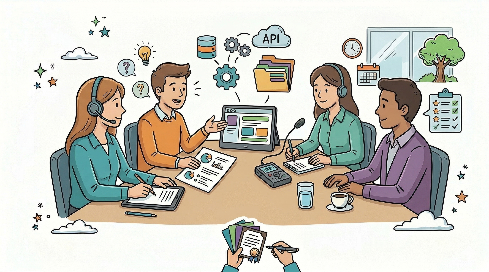

2.3: Técnica de Elicitação — Entrevista
2.3: Técnica de Elicitação — Entrevista
Introdução: A Arte de Perguntar
A entrevista é um processo de comunicação sistemático onde o analista de sistemas busca obter informações diretamente da fonte. O grande desafio da entrevista é que os usuários muitas vezes sabem o que fazem, mas não sabem explicar como ou por que fazem. O papel do analista é utilizar a entrevista para converter o conhecimento tácito (implícito) em conhecimento explícito (documentado).

1. Para que serve a Entrevista?
Diferente de um questionário, a entrevista permite profundidade. Ela é utilizada para:
- Identificar Objetivos: Entender o "porquê" do sistema existir.
- Mapear Processos: Descobrir o passo a passo das tarefas diárias.
- Revelar Exceções: Entender o que acontece quando o fluxo padrão falha (o "e se...").
- Estabelecer Confiança: Criar um canal de comunicação aberto com o stakeholder, facilitando validações futuras.
2. Tipos de Entrevista
| Tipo | Descrição | Quando usar |
|---|---|---|
| Estruturada | Segue um roteiro rígido de perguntas fechadas. | Para coletar dados estatísticos ou confirmações técnicas. |
| Não Estruturada | Conversa aberta e exploratória, sem roteiro fixo. | Nas fases iniciais, para descobrir problemas que o analista nem imagina. |
| Semiestruturada | Possui um roteiro base, mas permite explorar novos temas durante a fala | A mais recomendada. Equilibra direção e profundidade. |
3. Como se Preparar (O "Pré-Entrevista")
O sucesso de uma entrevista é decidido antes de ela começar. Um analista nunca deve ir para uma reunião sem:
- Estudo Prévio: Ler documentos da empresa, manuais de sistemas antigos ou observar o site do cliente. Não gaste tempo perguntando o que já está documentado.
- Perfil do Stakeholder: Entender o papel da pessoa (é o dono? é quem vai usar?). Ajuste o vocabulário conforme o perfil.
- Roteiro de Perguntas: Elaborar perguntas que estimulem a fala.
- Agendamento: Definir local (ou link) e tempo de duração. Entrevistas longas demais perdem produtividade.
4. Técnicas e Boas Práticas (O "Durante")
A. Uso de Perguntas Abertas vs. Fechadas
- Abertas: "Como você processa um pedido de venda?"
- Fechadas: "O sistema deve emitir nota fiscal?"
Estratégia: Comece com perguntas abertas para explorar o contexto, finalize com fechadas para validar entendimento.
B. Técnica dos "5 Porquês"
Para chegar à causa raiz de um problema, o analista deve perguntar "por que" sucessivas vezes:
- Usuário: "O sistema atual é lento."
- Analista: "Por que é lento?" → "Porque o relatório demora a carregar."
- Analista: "Por que demora?" → "Porque busca dados de três bancos diferentes."
Resultado: O requisito real deixa de ser "ser rápido" e passa a ser "otimizar a integração entre bancos de dados".
C. Escuta Ativa e Observação
Preste atenção ao que não foi dito. Hesitações ao descrever uma regra de negócio geralmente indicam processos mal definidos ou soluções improvisadas que o sistema precisará tratar.
5. Finalização e Pós-Entrevista
A entrevista não termina quando a conversa acaba:
- Transcrição e Limpeza: Organize as anotações imediatamente após a reunião.
- Validação (Feedback Loop): Envie um resumo para confirmação.
- Extração de Requisitos: Converta as informações em requisitos funcionais e não funcionais.
⚠️ Erros Comuns a Evitar
- Perguntas Indutivas: "Você não acha que o sistema deveria ter um botão azul?"
- Interromper o Usuário: Deixe o raciocínio ser concluído.
- Assumir Conhecimento: Sempre peça esclarecimentos quando necessário.
📝 Resumo Estrutural
- Objetivo: Extrair conhecimento tácito e alinhar expectativas.
- Formato Ideal: Semiestruturado (roteiro + flexibilidade).
- Foco: Perguntas abertas e identificação de problemas reais.
- Resultado: Registros que serão convertidos em requisitos técnicos.
📚 Este material foi criado por Kristian Erdmann e compõe a base técnica da Unidade Curricular de Análise e Modelagem de Sistemas.